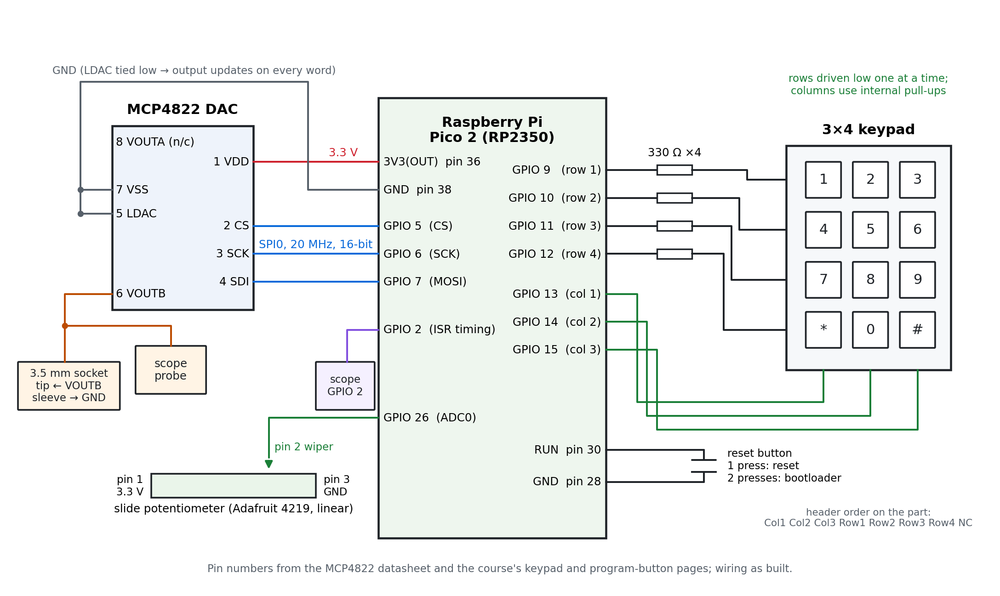
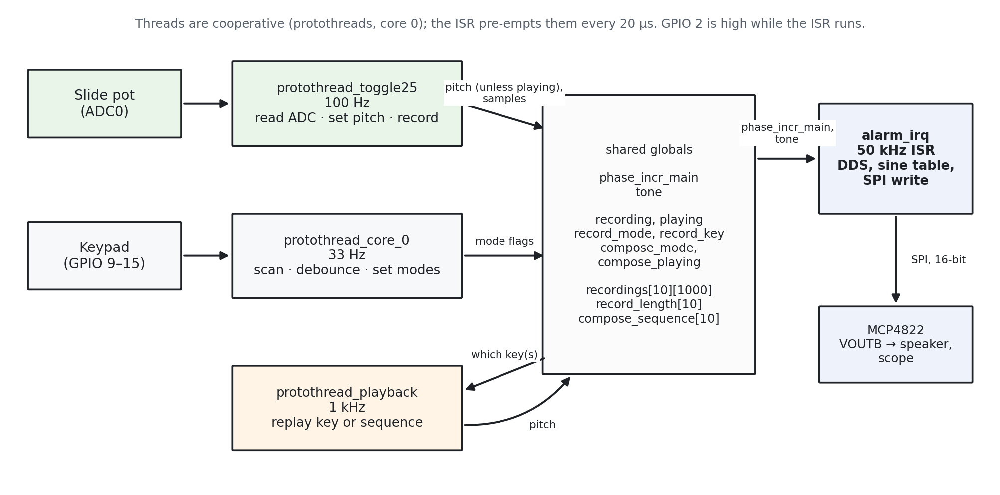
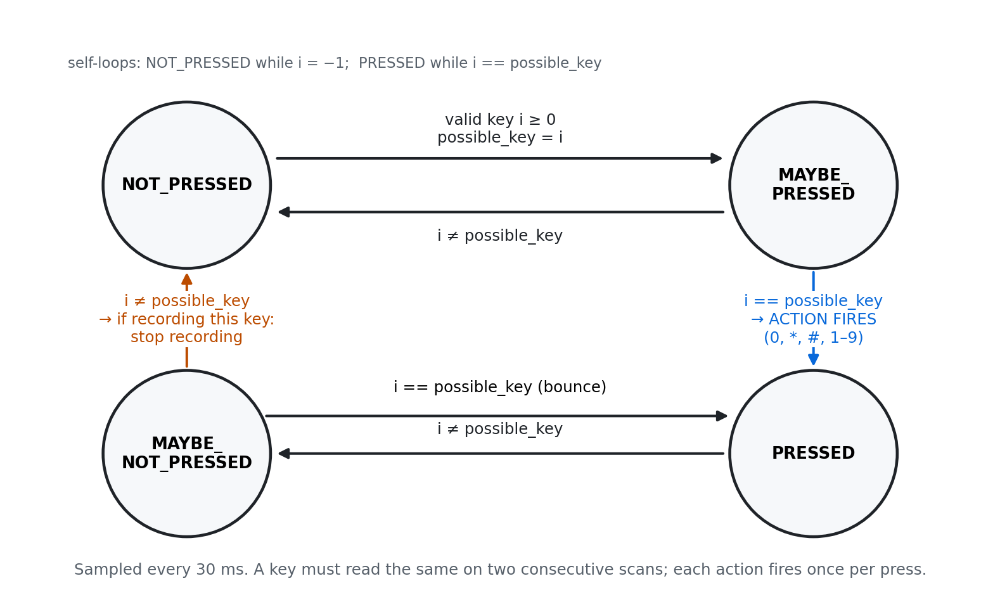
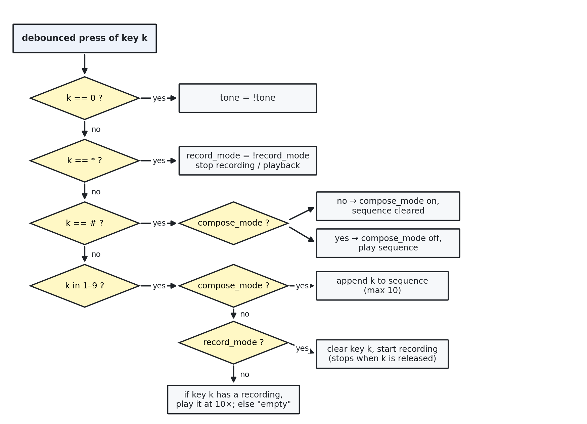

[Name (netID)], [Name (netID)], [Name (netID)]
Fall 2026 · Raspberry Pi Pico 2 (RP2350)
How to use this draft: yellow highlights are things only we can fill in (bench measurements, figures, names) or places that need our own words. Italic notes are instructions to us; delete them before submitting. Everything else is a first draft written from our submitted code and lab notebook. Rewrite it in our own voice. Layout follows the course report policy and the example reports.
In this lab we built a keypad-controlled tone generator on a Raspberry Pi Pico 2 that can record and replay pitch sweeps, the building blocks of birdsong. A timer interrupt running at 50 kHz uses direct digital synthesis (DDS) to generate a sine wave. The wave is sent over SPI to an MCP4822 digital-to-analog converter (DAC), whose output drives an oscilloscope and a speaker. A slide potentiometer sets the pitch from 0 to about 10 kHz. A 12-key keypad controls the system. Key 0 turns the tone on and off. The * key arms recording: holding any key 1–9 then stores the potentiometer's pitch for as long as the key is held. Pressing that key again plays the recording back at 10× speed, so a slow sweep of the slider becomes a fast bird-like chirp. The # key starts compose mode, which records a sequence of keys; pressing # again plays the sequence back. The system passed all three weekly checkoffs, including the final demo: we imitated the cardinal song in the handout's Fig. 2 and replayed a sequence a TA recorded, without resetting or reprogramming the Pico.
A recording stores pitches, not audio. The audio itself is generated live by DDS. A 32-bit phase accumulator gains a phase increment N on every interrupt and wraps around at 2³², so each wrap is one cycle of the output sine. The output frequency is
Fout = N · Fs / 2³² so N = Fout · 2³² / Fs
With Fs = 50 kHz, one unit of increment is 50 000 / 2³² ≈ 1.16 × 10⁻⁵ Hz, far finer than anything audible. The top of our range, 10 kHz, needs N = 858 993 459, which fits comfortably in 32 bits. The top 8 bits of the accumulator (phase_accum_main >> 24) index a 256-entry sine table holding ±2047. Adding 2048 centres the wave in the DAC's 12-bit range (0–4095, or 0–2.048 V at 1× gain), and the result goes to the DAC's channel B.
The Nyquist limit is 25 kHz, so 10 kHz is 40 % of it. At 10 kHz each cycle has only 5 samples, so the scope shows a visibly stepped wave at the top of the slider's range. That is expected, and it is still a valid reconstruction. At 2 kHz there are 25 samples per cycle.
Mapping the potentiometer. The ADC reads 0–4095. Used directly as a frequency, that would only reach 4095 Hz, short of both the 10 kHz requirement and the 2–7 kHz sweeps of a cardinal. adc_to_phase_incr() scales the reading to 0–10 000 Hz and converts it to a phase increment. It is the only place that conversion happens, so recording and playback always agree.
Four different "frequencies." The 50 kHz sample rate is how often the ISR produces a sample. The pitch (0–10 kHz) is what the potentiometer sets and what we hear. The recording rate (100 Hz) is how often the pitch is stored. The playback rate (1 kHz) is how often a stored pitch is replayed. Recording at 100 Hz and replaying at 1 kHz gives the required 8–10× speed-up without raising the pitch. Speeding up a list of pitches replays the same notes faster; speeding up the audio itself would raise every frequency.
Silence without a click. When the tone is off, the ISR keeps writing mid-scale (2048) to the DAC rather than 0. The wave is centred on 2048, so stopping there avoids a jump to 0 V and the loud pop that comes with it.
[Amplitude envelope: the report must include "a scope display of a swoop/chirp showing rise, sustain, fall". Our submitted code has no amplitude envelope; notes start and stop instantly. Decide: either add an envelope to the code before capturing (and log it), or show the trace we get and explain why it has no ramped rise and fall.]
[Figure 1: photo of the breadboard from directly above, keypad and potentiometer in place.]

Figure 2. Circuit as built. DAC pin numbers are from the MCP4822 datasheet; keypad wiring follows the course keypad page; the reset button follows the course program-button page. [Check against the breadboard.]
| Component | Connection | Purpose |
|---|---|---|
| Raspberry Pi Pico 2 (RP2350), 150 MHz | — | Runs the ISR and the three protothreads. |
| MCP4822 12-bit dual DAC | GPIO 5 → CS, GPIO 6 → SCK, GPIO 7 → SDI; LDAC and VSS to GND; VDD to 3V3 | Turns each 16-bit SPI word into a voltage on VOUTB. LDAC is tied low so the output updates as soon as a word arrives. |
| 3.5 mm audio socket | tip to DAC VOUTB, sleeve to GND | Speaker output. |
| Slide potentiometer (Adafruit 4219, linear taper) | wiper (pin 2) → GPIO 26 / ADC0; ends to 3.3 V and GND | Sets the pitch. |
| 3×4 matrix keypad | rows → GPIO 9–12 through 330 Ω each; columns → GPIO 13–15 with internal pull-ups | User input. The resistors limit current if pressing two keys in one column shorts two row outputs together. |
| Reset button | RUN (pin 30) to GND (pin 28) | Resets the board; two quick presses enter the bootloader for reflashing. |
| GPIO 2 | scope probe | High for the duration of every ISR, for timing. |
| GPIO 25 (on-board LED) | — | Heartbeat toggled by the keypad thread, so a steady blink shows the scheduler is running. |
DAC command word. Each SPI transfer is one 16-bit word: 4 configuration bits followed by the 12-bit value. We use 0b1011 in the top four bits (DAC_config_chan_B).
| Bit | 15 | 14 | 13 | 12 | 11–0 |
|---|---|---|---|---|---|
| Name | A/B | — | GA | SHDN | D11–D0 |
| Our value | 1 = channel B | 0 | 1 = 1× gain (0–2.048 V) | 1 = output on | sine sample + 2048 |
Moving the output from channel A to channel B (the week 1 requirement) is a change to bit 15 alone.
Two wiring lessons. First, the lab's keypads are labelled Col1 Col2 Col3 Row1 Row2 Row3 Row4 NC along the header, which differs from the part the demo's comment describes, so we wired by function rather than by pin number. Second, printf goes to UART0 (GPIO 0/1), not USB, so reading serial output needs a USB-to-serial adapter.

Figure 3. Software structure. Three cooperative protothreads share global variables; the 50 kHz timer ISR reads the pitch and tone flag and is the only code that writes to the DAC.
| Part | Rate | What it does |
|---|---|---|
alarm_irq (timer ISR) | 50 kHz | Raises GPIO 2, clears and re-arms the alarm, then either advances the phase accumulator and writes the sine sample (tone on) or writes mid-scale (tone off) to the DAC over SPI, and lowers GPIO 2. |
protothread_toggle25 | 100 Hz | Reads the ADC. Sets the pitch from the potentiometer unless a playback is running. While recording, appends the reading to the selected key's array. |
protothread_playback | 1 kHz | Replays a key's stored readings one per millisecond (10×). In compose mode, plays each key in the sequence in turn. |
protothread_core_0 | 33 Hz | Scans the keypad, debounces it, and sets the modes. |
adc_to_phase_incr() | — | Converts an ADC reading to a phase increment, 0–10 kHz. |
recordings[10][1000], record_length[10] | — | Stored readings as uint16_t, indexed by key number (slot 0 unused). A key has a recording when its length is non-zero. |
compose_sequence[10] | — | A composed phrase, stored as up to 10 key numbers rather than sound. |
The pieces communicate only through global variables. The threads set the pitch (phase_incr_main) and whether the tone is on (tone); only the ISR touches the DAC. The protothreads library schedules from the free-running 64-bit timer (time_us_64()) and claims no hardware alarm, so alarm 0 is free for the audio interrupt.
Keypad and debounce. The scan drives one row low at a time and reads the three columns, giving a 7-bit code that is looked up in a table (index 0–9 for digits, 10 for *, 11 for #, −1 for none). A four-state machine samples it every 30 ms: NOT_PRESSED → MAYBE_PRESSED → PRESSED → MAYBE_NOT_PRESSED. A key must read the same on two consecutive scans to count. The action fires once, on the transition into PRESSED. The PRESSED state itself does nothing, which is what stops a held key firing 33 times a second. Recording stops on the transition from MAYBE_NOT_PRESSED to NOT_PRESSED, when the recorded key is released.

Figure 4. Keypad debounce state machine, as described on the course keypad page. Key actions fire on MAYBE_PRESSED → PRESSED; recording stops on MAYBE_NOT_PRESSED → NOT_PRESSED.
[Check before submitting: in our code the else { state = NOT_PRESSED; } in MAYBE_PRESSED is attached to the key-action if/else chain instead of to if (i == possible_key). So the MAYBE_PRESSED → NOT_PRESSED transition in this figure does not happen in our code. Either fix the brace or describe the difference.]
Modes.
| Key | Action |
|---|---|
| 0 | Toggle the tone on and off. The system boots with the tone on. |
| * | Arm recording. The next key 1–9 pressed records the potentiometer's pitch while it is held; releasing it stops the recording and disarms. Other keys' recordings are untouched. |
| 1–9 | In compose mode: add the key to the sequence. If armed: record. Otherwise: play that key back. |
| # | First press starts compose mode with an empty sequence; second press plays the sequence. |

Figure 5. What each debounced key press does.
if (!playing), the ADC thread and the playback thread both write the pitch, and the slider overwrites much of the recording.uint16_t storage. Readings are 0–4095, so they fit in half the space of a 32-bit phase increment (suggested on the course forum by Dennis Bui).* arms a single recording and the device defaults to not recording.Rewrite this in our own words; it is the part the policy stresses most. Describe what we actually did at the bench.
One change at a time, each part tested alone first. We flashed a pre-built binary before wiring anything, to prove the laptop, cable and board worked. We wired the DAC and confirmed the unmodified DDS demo on the scope and through the speaker, then moved the output to channel B. We ran the ADC demo on its own and watched readings on the serial terminal before merging it with DDS. We ran the keypad demo on its own and pressed all twelve keys before merging that too. After each merge we confirmed the earlier function still worked, for example that key numbers printed while the tone kept playing.
How each requirement was verified.
| Requirement | Test | Result |
|---|---|---|
| DAC produces the tone | Scope on VOUTB; listen through the jack | [frequency and amplitude read off the scope] |
| Pot sets 0 to ~10 kHz | Scope frequency at the bottom, middle and top of the slider | [see Results] |
| 0 toggles cleanly | Repeated presses with the serial log open: one "tone on/off" line per press | [pass/fail] |
| Record while held, stop on release | Hold a key for a timed ~2 s; on release the serial log prints the samples stored (~200 expected at 100 Hz) | [___ samples] |
| Playback at 8–10× | Time a playback of a known-length recording on the scope | [see Results] |
| Separate sound per key | Record different sweeps on several keys, then play each | [pass/fail] |
| Compose and replay | #, several keys, #; the log prints each key added | [pass/fail] |
| ISR timing | Scope on GPIO 2 | [see Results] |
Bugs found and fixed. A code review after week 2 found several defects. The ones that taught us the most:
| Symptom | Cause | Fix |
|---|---|---|
| Record and play behaved randomly | A non-static local array inside a protothread. Protothreads resume by jumping into a switch, so locals do not survive a yield. | Keep state in statics or globals; the recording length now says whether a key is recorded. |
| Memory corruption on key 9 | Arrays sized [9] for keys 1–9 | Size 10, index by key number |
| Playback sounded like the slider | Two threads writing the pitch | Mode gate |
| Board booted silent | Tone started off and nothing handled key 0 | Tone starts on; key 0 toggles it |
| Slider only reached 4095 Hz | Raw ADC reading used as the frequency | adc_to_phase_incr() scales to 10 kHz |
| Pop on mute | Mute sent 0 V instead of mid-scale | Write 2048 when the tone is off |
| Recordings vanished after toggling record mode | Entering record mode cleared every key | Clear only the key being recorded |
Several of these were the same mistake: one fact stored in two places that then drifted apart. [Add any bugs we hit at the bench, e.g. while adding compose mode.]
Required by the policy. Check every claim here, and say it in our own words.
We used Claude (Claude Code). It set up the toolchain: the Pico SDK and the official Arm GCC toolchain. It diagnosed that Homebrew's compiler ships without a C library and fails to link. It explained concepts including DDS, SPI, protothreads, debouncing and matrix keypads. We wrote the ADC integration, keypad scan, debounce state machine, record mode, playback thread, the 10× playback rate and compose mode. After week 2 we asked it to review our code. It found the bugs in the table above and fixed them at our request, including adc_to_phase_incr() (marked in the listing), the mode gate, the array sizing, mid-scale muting and the record-mode restructure. [It also wrote later features (an amplitude envelope, its own compose mode and playback timing) that we did not use in the submitted code. Decide whether to mention this.] The full prompt log is in Appendix B.
[Reflect in our own words: what the AI was useful for, where we had to check it, and what we understood versus accepted.]
Figures 1–5 above: photo, schematic, software block diagram, debounce state machine, and key-handling flowchart. The commented code listing is in Appendix A.
| Week | Software | Hardware | How we tested |
|---|---|---|---|
| 1 | DDS demo; output moved to channel B; ADC merged in, pot sets 0–10 kHz | DAC, audio jack, reset button, potentiometer | Scope and speaker; ADC demo alone on the serial terminal |
| 2 | Keypad scan, debounce, key 0 toggle, record mode, playback thread, review fixes | Keypad with row resistors | Keypad demo alone; serial log; scope on GPIO 2 |
| 3 | 10× playback, compose mode | — | Demo: Fig. 2 imitation, TA's sequence, no reset |
Every figure: number it, caption it, refer to it in the text, and say what it shows with numbers checked against the spec, as the example reports do.
At 150 MHz, one 20 µs sample period is 3000 CPU cycles. The ISR has to fit well inside that to leave time for the threads.
| Measured | In cycles (× 150) | Share of 20 µs | |
|---|---|---|---|
| ISR pulse width on GPIO 2, tone on | ___ µs | ___ | ___ % |
| ISR pulse width, tone off | ___ µs | ___ | ___ % |
| Period between pulses | ___ µs | expected 20.0 |
For reference, the SPI transfer alone is 16 bits at 20 MHz = 0.8 µs. [Figure 6: GPIO 2 on the scope.]
| Slider | Expected frequency | Measured frequency | Error |
|---|---|---|---|
| Bottom | ~0 Hz | ___ | ___ |
| Middle | ___ | ___ | ___ |
| Top | ~10 000 Hz | ___ | ___ |
Output amplitude: ___ V peak-to-peak (full scale is 2.048 V at 1× gain).
[Figure 7: scope at 10–20 ms/div, single-shot trigger, one recorded swoop played back. Annotate rise, sustain, fall, or explain their absence (see §2.1).]
[Record a timed sweep (e.g. 2 s → ~200 samples), then measure the playback on the scope. Expected ~200 ms for 10×. Each sample waits at least 1 ms plus scheduling, so playback may run slightly slower than exactly 10×; report the measured ratio.]
[Figure 8: spectrogram of the MCU's output, such as our Fig. 2 imitation played back through compose mode. Say how it was captured (aux cable or speaker to mic, sample rate, window length). Compare with the handout's Fig. 2: frequency range, durations, gaps. Did Merlin identify it?]
[Usability. What we learned: interrupts and timing budgets, DDS, sharing state between an ISR and threads, debouncing. The biggest lesson from the bugs (one fact in two places). What we'd do differently, e.g. check the frequency range against the spec when integrating rather than a week later. Comments or suggestions on the lab.]
The current Lab 1 page asks no specific questions, so this section answers the prep-sheet questions (2021 PIC32 version). Check with a TA whether that is expected, or drop the section.
Q1. Maximum current per I/O pin and in total. The PIC32 datasheet gives a per-pin limit and a smaller total limit. On the RP2350, GPIO drive strength is configurable at 2, 4, 8 or 12 mA, and the whole board is limited by the Pico's 3.3 V regulator. Either way, a GPIO drives a signal, not a load.
Q2. What hardware do protothreads use? On the RP2040/RP2350 the library uses the free-running 64-bit system timer through time_us_64() and claims no hardware alarm, so alarm 0 is free for the audio ISR. The PIC32 version claimed a timer.
Q3. Timer period for 44 kHz from 40 MHz, prescaler 1. 40 000 000 / 44 000 = 909.09 → 909 cycles. On the RP2350 we set the period directly: 1/50 000 = 20 µs.
Q4. DDS frequency resolution with a 32-bit accumulator. Fs/2³² = 44 000/2³² ≈ 1.02 × 10⁻⁵ Hz (our 50 kHz gives 1.16 × 10⁻⁵ Hz).
Q5. Alternatives to a linear amplitude ramp. Exponential (sounds natural, costs a multiply, never quite reaches zero); raised cosine (smooth everywhere, needs a table); ADSR (expressive, four parameters to tune); Gaussian (least spectral spread, no flat sustain). Any abrupt change in amplitude spreads energy across all frequencies, heard as a click and seen as a vertical smear on a spectrogram.
[Paste the final birdsong code in a monospace font, with more comments than it has now ("heavily commented" is required). Mark every AI-originated block the way adc_to_phase_incr() already is.]
The handout asks for words exchanged and the number of additions/deletions/modifications suggested and accepted. Counts below are from our Claude Code transcripts; check them.
| Date | Prompts | Our words | Claude's words | Work |
|---|---|---|---|---|
| Sep 4 | 16 | 525 | 10 495 | toolchain setup, prep questions |
| Sep 10 | 46 | 5 381 | 20 606 | code review and bug fixes |
| Sep 11 | 40 | 2 056 | 15 021 | week 3 features (not used in the submitted code) |
"Our words" includes handout text pasted into prompts.
AI code changes and whether they are in the submitted code (lines added / removed):
| Change | +/− | In submitted code? |
|---|---|---|
| Bugs 1–2: static protothread state, arrays sized 10 | +10 −3 | yes |
| Bugs 3–4: mode gate, tone on at boot, key 0 toggle | +15 −4 | yes |
Bugs 5–12: adc_to_phase_incr(), mid-scale mute, record-mode restructure, playback interruptible, single LED owner, comment fixes | +52 −62 | yes |
?: replaced with if/else | +10 −2 | [partly?] |
| Amplitude envelope; compose mode; playback timing | [fill] | no |
[Totals: suggested ___ / accepted into the submitted code ___. Add the list of prompts and responses: notes/lab-notebook.md §11 in the repo.]